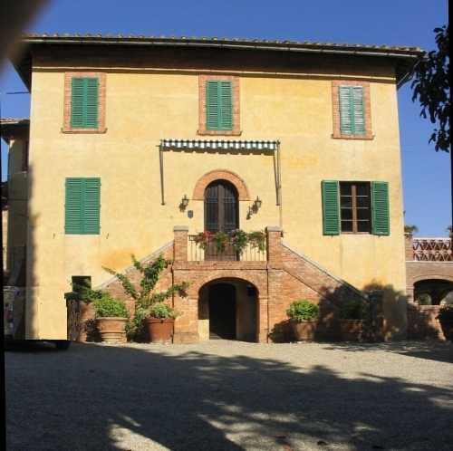
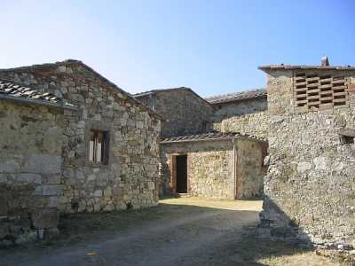
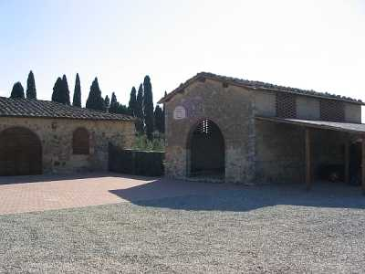
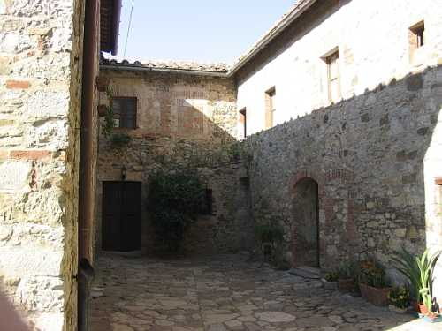

Quercegrossa (Ricordi e memorie)
CAPITOLO I - LUOGHI E PODERI
(PETROIO)
Cliccami per ritornare all'Indice poderi
Vai all'Indice dei Capitoli
PETROIO

Petroio è uno dei più antichi agglomerati della nostra terra ed anche il più documentato fin dall’anno Mille per la presenza della chiesa omonima che giunse ben presto ad essere centro parrocchiale. La genesi del suo nome si spiega facilmente osservando i grandi macigni e i sassi che spuntano come funghi dal terreno. La sua origine si pone in epoca romana, ma si può pensare ad una presenza umana molto anteriore, ed è documentata dal cosiddetto "arco romano" in laterizi, che ancor oggi si può osservare sull’angolo del podere "Paradiso"; resti che attestano la presenza di una villa rustica romana con i suoi annessi. In epoca medievale il borgo detto Petroio comprendeva alcune case alle quali si aggiunse, molto più tardi, Casagrande. Già nel 1319 la chiesa di Petroio possiede terra, vigna e casa in “loco Petroio” mentre Michele Salvucci possiede la villa di Petroio e Pietralta, e un altro possidente ha un pezzo di terra lavorato con casa posta in villa di Petroio. Da questi dati emerge che l’abitato di Petroio ha già gli elementi che ritroveremo due secoli dopo, ossia i due poderi, uno dei quali il rammentato Paradiso mentre l’altro detto "Petroio" è oggi fattoria composta da più edifici delimitati dalla chiesa a Nord e dalla villa a Sud, con capanna e cantina distaccate. I poderi sono citati fino all’Ottocento col nome generico di Petroio abbinato ai rispettivi proprietari: Petroio Credi, Petroio delle Monache, Petroio Squarcialupi, ecc. L'attuale villa (nella foto sopra), sede estiva dei padroni, sorge probabilmente ad opera della famiglia Manetti, nel secondo decennio dell'Ottocento, basando la teoria sulla descrizione del podere di Petroio che viene fatta nel contratto di vendita del 1821 che presenta un ambiente molto diverso dall'attuale nel quale la casa padronale deve subire ancora la trasformazione in villa: ".. altro podere denominato Petroio Palazzo, con Oliviera, e fornace, e casa padronale … e composta come appresso cioè: Di casa colona che si ha l'accesso dalla piazza per mezzo di scala scoperta e loggia coperta composta fra il primo e il secondo piano, che è in uso di granaio di stanze numero sette con sua colombaia spopolata e per la loggia stessa si ha l'ingresso alla casa padronale di un solo piano di numero 5 stanze, cha al presente sta in uso dell'inquilino e al di sotto di questa tinaio di numero quattro stanze alla quale si ha l'ingresso dalla ridetta piazza … e da detta piazza si entra nel chiostro con sua parata con annesso numero quattro stalle, e celliere, stabbio per gli animali neri, pozzo murato, arzenale con due stanzette, ed indi mulino da olio macinante con sua Bottega, e numero sei stanze divise in due piani con il suo corredo e poco distante passata la strada, aja spinata con suoi muri, sua parata e di fronte due capanne con ... e passando la strada Campo Santo e chiesa che è la succursale della cura ridetta ed è tutto in stato mediocre". La villa moderna si innalza su tre piani con un caratteristico ingresso che introduce al primo piano abitato formato da una scala esterna in cotto a due rampe contrapposte sostenuta da un arco a sesto abbassato che immette nell'ambiente al pian terreno. La facciata si presenta sobria nella sua esatta simmetria. Un elegante loggiato, aggiunta molto posteriore, e un abbaino che svetta sul tetto le danno un tocco di originalità.
La villa di Petroio vista da est
Possesso della famiglia senese dei Credi fin dal Cinquecento Petroio, con una breve parentesi di possesso agli Strozzi, alla metà del Seicento, padroni di Mucenni, passò poi ai Fortini nei primi anni del Settecento. Essi rimasero a Petroio per circa un secolo e a loro succedettero i Fondi che comprarono da Maria Fortini nei Borghesi il 5 maggio 1821 per rivenderlo quasi subito il 31 dicembre 1823 a Ferdinando Manetti possidente e commerciante di Siena per la somma di scudi 2250 (15.750 lire). Negli anni seguenti la proprietà del podere di Petroio detto "Petroio Palazzo", con oliviera, il podere Paradiso, i poderi di Bellostento ed Erede vennero interessati da una sentenza del tribunale che coinvolse i vecchi proprietari in una vertenza per la distribuzione dei vecchi crediti. Un decennio dopo, il 14 luglio 1834 il Manetti vende Petroio ai fratelli Bacci e dopo un’altra causa in tribunale intentata dai creditori di quest’ultimi, la proprietà nei successivi quindici anni è oggetto di un frenetico cambio di titolari che vede alternarsi Nardi Ambrogio dal 25 agosto 1838, Cosimo Guarnieri e Chelazzi Francesco dal 28 novembre 1839, al solo Guarnieri nel 1840, a Carlotta Becattini vedova Pacini dal 1843, a Ottavia Bandinelli vedova Nini dal 1846, a Nini Carlo di Angelo usufruttuario, Nini Angelo di Carlo proprietario e Nini Antonio, Ferdinando, Vittoria e Carlo di Angelo e Baldini Giuseppe e Lattanzio di Filippo legittimari dal 9 gennaio 1852. Finalmente il 9 marzo 1852 termina il valzer dei passaggi e subentra, unico proprietario, l’avvocato Ferdinando Andreucci. Nel 1875 al nuovo catasto d’impianto dei fabbricati civili il possesso è registrato a nome di Andreucci Ferdinando proprietario di Petroio con villa, case e capanne chiamato "Villa e annessi" ai numeri civici 47 e 48. Il 18 ottobre 1882 si registra una modifica alla costruzione e nel 1888 eredita la tenuta Alberto Andreucci che ne resta in possesso per 14 anni, fino a quando fanno la loro comparsa i Pallini che per mezzo di compra passa tutto il 3 febbraio 1896 a Cesare Pallini fu Luigi. Sempre per compra il 21 giugno 1900 i fratelli Pallini Arturo e Luigi per 6/8, Benedetto e Giulio per 2/8, si dividono la fattoria. La morte di Cesare avvenuta il 2 marzo 1911 fa ereditare Luigi e Arturo, e nel 1921 il dr. Luigi Pallini, domiciliato a Grosseto, diventa unico proprietario. Alla di lui morte la figlia Caterina in Lenzi eredita la fattoria che trasmetterà ai figli.
Alcune vedute della fattoria: ambienti di servizio e di abitazione, le capanne e un chiostrino.



Dai dati disponibili fin dal Cinquecento si ottengono i nomi di alcuni dei numerosi coloni che hanno lavorato le terre di Petroio e tra questi Agostino di Caio nel 1592, Giovanni Guerranti nel 1605 Bastiano Cristofani nel 1611, Domenico di Agnolo Nicolucci nel 1625, Dell’Semplice Francesco e Luigi intorno al 1630. Col Settecento arrivano i Lucenti, i Lucchesi e i Sampieri documentati dal 1733 al 1801. Nell’Ottocento i Pianigiani, i Bartalozzi per quasi tutto il secolo, Marradi e Franci. Il nuovo secolo si apre con i fattori Pianigiani e Marzochini, il colono Carapelli e il pigionale Buti. Nei vari censimenti appaiono Manganelli Bernardo, il colono Sabatino Andreini e in fattoria Pietro Valeri nel 1911. Dieci anni dopo non è cambiato fattore, ma la pigione è vuota e Giuseppe Macinai è il contadino. Nel 1931 sono presenti il fattore Faellini e i Guarducci nel podere, cui faranno seguito i Lusini e Masiero. In fattoria abiteranno in seguito il Nuti, il Barbucci, l’Azzurrini e il guardia Alvaro Dragoni.
Il viale di ingresso alla fattoria visto dalla villa
La villa di Petroio circondata da ambienti di servizio
La chiesina di Petroio vista da nord-ovest
|